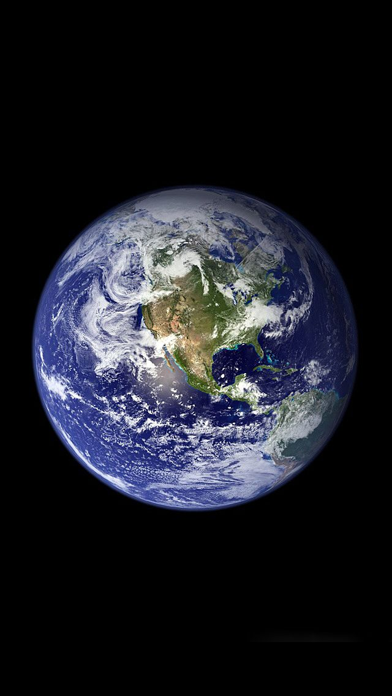
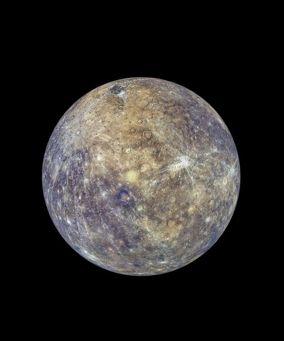
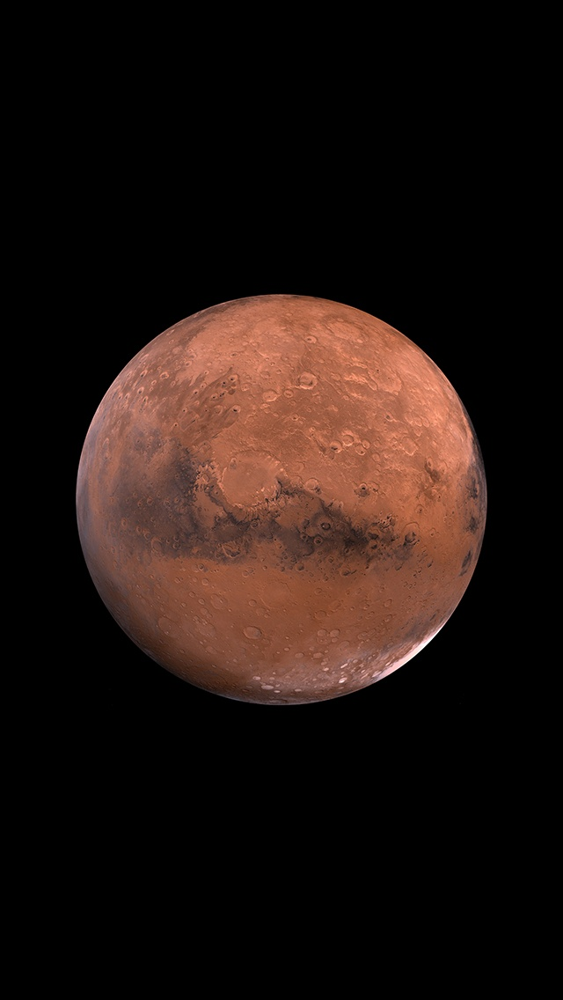
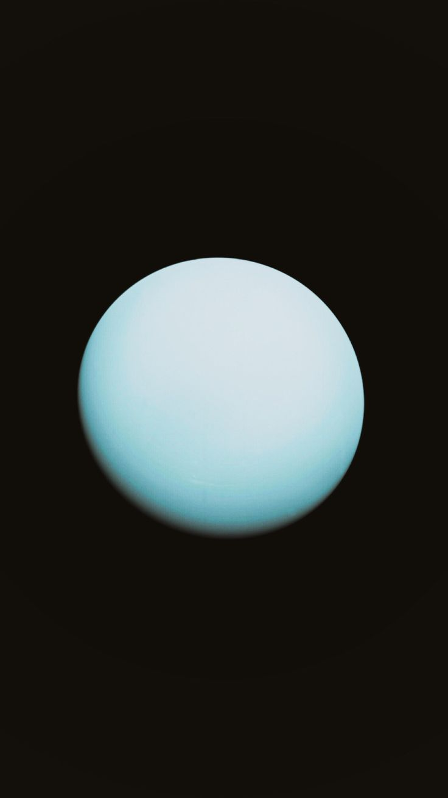
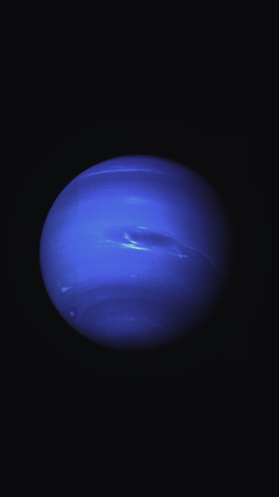

vision
VISOIN

Earth is the only known planet that supports life. It is characterized by the presence of water on its surface and a rich biological diversity.
Read more about Earth

Mercury is the closest planet to the Sun and the smallest in our solar system. It features extreme temperature variations, being very hot during the day and very cold at nigh
Read more about Mercury

Mars is known as the Red Planet due to the color of its soil. It is considered a potential place for exploring life beyond Earth.
Read more about Mars

Uranus is known as an "sideways" planet because it rotates on its side. It has a blue color due to methane in its atmosphere.
Read more about Uranus

Neptune is the farthest planet from the Sun, characterized by strong winds and dark storms. It is known for its deep blue color.
Read more about Neptune